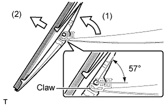
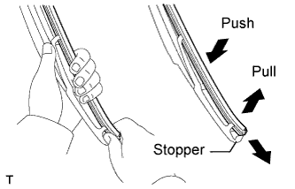

REAR WIPER RUBBER > REMOVAL |
| 1. REMOVE REAR WIPER BLADE |
 |
Raise the rear wiper blade to the position shown in the illustration until the meshing of the claw disengages with a clicking sound.
Pull the rear wiper blade straight away from the wiper arm toward the left side of the vehicle.
| 2. REMOVE REAR WIPER RUBBER |
 |
Pull the end of the wiper rubber protruding from the blade stopper as shown in the illustration and remove it.
Remove the 2 wiper rubber backing plates from the wiper rubber.